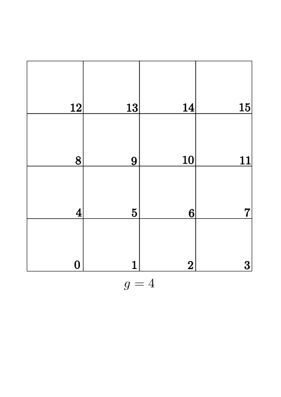

Spatial Grid & Compute Shader
1. The \(\text{ }\mathcal{O}(n^2)\text{ } \) Bottleneck
In simulation of \(N\) number of particles, it takes \(\frac{N(N-1)}{2}\) number of collision checks. This is brute force, but can be optimised using the fact that for each frame, we need to check collision of a particle with its neighbours only. We can avoid checking collision between two particles if they are far enough.
2. Spatial Partitioning & Mapping
Arranging the particles in a \(n \times n\) grid so that \(N = n \times n\), the space is divided into a grid of cells as shown in the figure.

The length of each cell is kept equal to the diameter of a particle for best results of the algorithm. Let the space span \(g \times g\) number of cells. For instance, above space spans total of \(1 6\) cells.
For each cell, an id is assigned (mentioned in the corner of each cell in the figure). Similarly for each particle, an id is calculated. The particle's id determines which cell it belongs to. For instance, particle with id \(3\) will be assigned to cell which has id \(3\).
The id of a particle having center \((x, y)\) is given as
Where \(X = \frac{gx}{2}\) and \(Y = \frac{gy}{2}\).
The additional \(\frac{g(g+1)}{2}\) is because the origin is present at the middle of screen rather than bottom left corner.
3. Memory Management & Data Structures
An array called positions stores the center of all particles. An array called velocities stores the velocities of all particles.
An array called grid stores the groups of particles formed based on their id. Specifically, grid[i] is another list which stores the data ParticleReference of particle whose id is \(i\). This ParticleReference consist of coordinates x and y, the index from positions of particle, and its id.
An array called capacities stores the number of particles present in each cell. Specifically, capacities[i] is the length of grid[i].
To improve performance, these arrays are flat (1d) and preallocated. Positions has initial positions of particles arranged in a grid. Velocities has random data (for random start of each particle). Grid has lists initialised with max_particles_per_cell number of ParticleReferences {0,0,0,0}.
Since there are \(g^2\) number of cells, the total length of grid is
max_particles_per_cell \(\times\) sizeof(ParticleReference)
4. GPU Architecture & std430 Alignment
While CPU is good for considerable number of particles, it still hits bottlenecks when we increase \(N\) to a very large number, such as \(40,000\). For this reason, GPGPU is employed through compute shaders to take advantage of parallelism of GPU.
The data lives in the special memory of GPU called Shader Storage Buffer Objects (SSBO). The GPU can read and write into this SSBO, which eliminates the bottleneck of sending all the data to GPU for rendering each frame as well as lets the GPU modify data present inside SSBO.
The std430 rules restrict the data to have sizes that are multiples of their largest member's base alignment. In our case, our ParticleReference is of 16 bytes.That means all of our arrays must contain 16 bytes of data for each element. For data such as capacities (having single integer, so 4 bytes), we add explicit padding to make overall size of its elements to be 16 bytes. Its just for making the data agree std430 rules. This padding is done for all structures we use for rendering (such as vertex data) as well as physics data.
5. Simulation Loop
Compute shader is basically a program that lives in GPU instead of CPU. For each frame, three compute shaders are used.
assign_compute_shader
- loops through "particles", calculate their id, and puts the ParticleReference of it in grid[id] list.
- Increments capacities[id]
- Checks wall collision
- Accordingly, updates the velocities array (for wall collisions only)
resolve_compute_shader
- Loops through particles, again finds the id of particle
- Generates the neighbour cells ids for each particle (cells which surround the cell of particle. for example, if we are checking particle whose id is \(4\), then the neighbour cell ids for it are \( 0,1,5,8,9\)) and checks the collision of particle with all particles present in the neighbour cells.
- Accordingly, updates the velocities array. (for particle-particle collisions only)
- Note that once a particle is checked, it is not considered as a neighbour particle for next iterations
integrate_compute_shader
- Reads the positions and velocities array and updates the positions array using euler integration
6. Rendering
Instanced rendering is implemented to replace \(N\) number of draw calls for \(N\) number of particles to \(1\) draw call for the same particles. The vertex shader recieves the base vertices of a circle and positions array. Based on this, it processes those vertices. It also recieves the velocity array so that it can determine the color of particle based on its speed. This color varies on a spectrum whose end colors are defined by us. It is then sent to fragment shader. This color mapping is done to derive a meaningful information about the simulation.
7. A bit more technical
- If \(X\) and \(Y\) in the id formula are strictly equal to \(\frac{g}{2}\), they are explicitly set equal to \(\frac{g}{2}-1 \). Else the id becomes greater than number of cells.